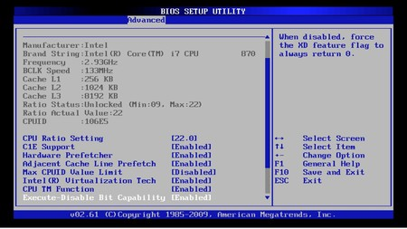
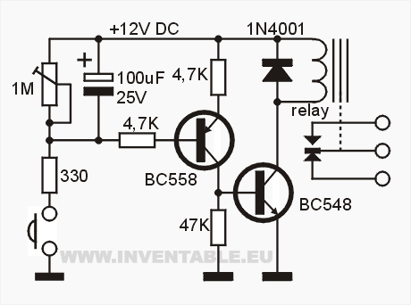
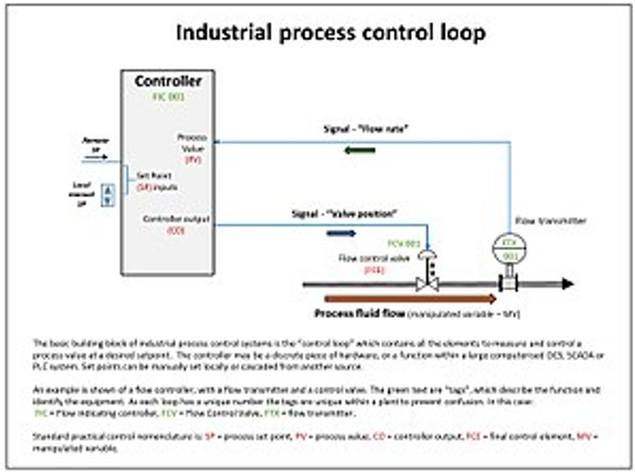
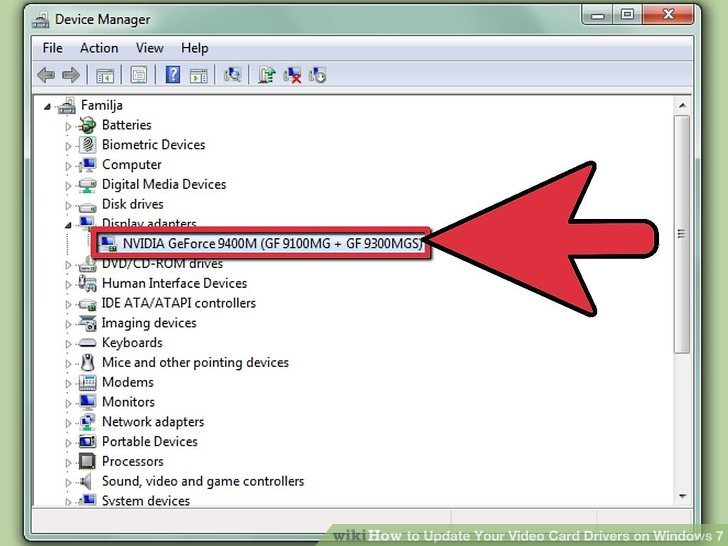
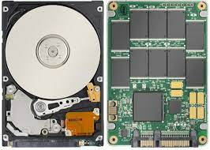
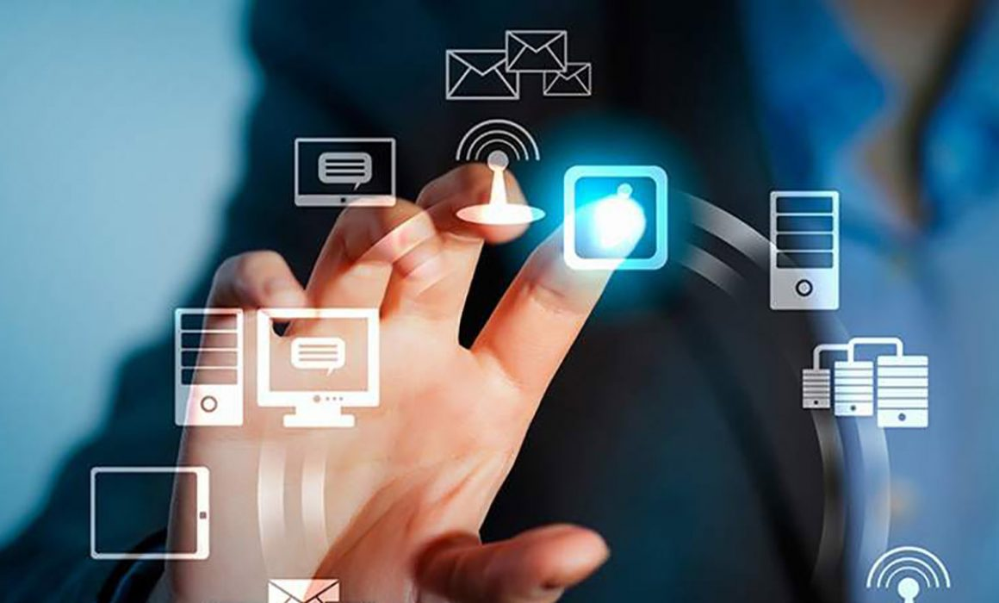

Unidad 3
3.1 Chipset
Un chipset electrónico gestiona el flujo de datos entre los componentes de una tarjeta madre. Es el controlador de tráfico entre CPU, Tarjeta Gráfica, RAM, almacenamiento y periféricos. Los expertos se han referido a él como el "pegamento" de la tarjeta madre. El chipset es básicamente la parte electrónica de la tarjeta madre que se comunica con todos los componentes conectados.
 Más importante aún, el chipset determina la compatibilidad entre todos estos otros
componentes. Si alguno de los procesadores o tarjetas de memoria no se comunica con el
chipset, no puede enviar ni recibir información en la tarjeta madre.
Más importante aún, el chipset determina la compatibilidad entre todos estos otros
componentes. Si alguno de los procesadores o tarjetas de memoria no se comunica con el
chipset, no puede enviar ni recibir información en la tarjeta madre.
Los conjuntos de chips integrados de hoy se alojan en la tarjeta madre y permiten que los componentes se comuniquen entre sí a través de esta misma desde una ubicación centralizada. Sin embargo, en el pasado, existían chips individualizados más pequeños para cada componente.
Puedes imaginar que en realidad era bastante confuso tener un chip para la CPU, un chip para la RAM, etc. Con el paso del tiempo, la funcionalidad del chip se consolidó en dos conjuntos de chips principales, el Puente norte más rápido que se conecta directamente a la CPU y la memoria, y el Puente sur más lento.
3.1.1 Unidad Central de Procesamiento (CPU)
CPU son las siglas de Central Processing Unit, lo que traducido significa Unidad Central de Procesamiento. Se trata de uno de los componentes vitales que te vas a encontrar en tu ordenador, tu smartphone o tu tableta o portátil, e incluso en relojes y prácticamente cualquier dispositivo electrónico. Sin él, simplemente no podrían funcionar.
A la CPU se la suele llamar coloquialmente como microprocesador o simplemente procesador, y puedes considerarla como el cerebro de cualquier dispositivo. Se encarga de procesar todas las instrucciones del dispositivo, leyendo las órdenes y requisitos del sistema operativo, así como las instrucciones de cada uno de los componentes y las aplicaciones.
Así pues, igual que el cerebro, la CPU es la que se encarga de que todo funcione correctamente, y de interpretar todo lo que quiere hacer el sistema operativo o los componentes, estableciendo las conexiones y realizando todos los cálculos precisos para que funcione. Cuanto más potente sea el procesador, más rápido podrá hacer las operaciones y más rápido funcionará tu dispositivo en general.
Es también el encargado de leer, interpretar y procesar las instrucciones primero del sistema operativo, y después de los programas o aplicaciones que tienes instalados en el ordenador. Cuando abres Word o tu navegador, este tiene que cargarse, y para ello necesitar realizar una serie de pasos cuyas instrucciones le manda al procesador. Cada acción que hagas luego dentro, también enviará instrucciones para poder ejecutarse y realizarse.
3.1.2 Controlador de BIOS
 El sistema básico de entrada / salida (BIOS) en una computadora es un programa simple pero importante en una computadora personal (PC) que ayuda a que la computadora arranque y ejecute correctamente un sistema operativo (SO) durante el inicio. Los controladores de BIOS se utilizan normalmente en referencia al programa en sí, y cómo el programa se ejecuta e interactúa con otros dispositivos en la computadora. Estos controladores en una computadora se guardan en la memoria de la placa base y permiten la inicialización y puesta en marcha adecuadas de una computadora cuando está encendida
Cuando una computadora se enciende por primera vez, se ejecuta el BIOS en la placa base para comenzar a iniciar correctamente la computadora. Este sistema tiene acceso básico al hardware de la computadora, especialmente el mouse y el teclado, para permitirle al usuario ver y modificar la configuración del BIOS por una variedad de razones.
. En última instancia, la BIOS es responsable de ejecutar el sistema operativo durante el inicio, momento en el que la mayoría de los sistemas operativos modernos asumirán el control de las funciones de la computadora y la BIOS no se utilizará posteriormente. Los tipos de sistema operativo más antiguos usarían el BIOS para acceder al hardware de la computadora, pero la mayoría de las versiones nuevas ahora acceden al hardware directamente a través de los controladores integrados en el sistema operativo.
3.1.3 Puertas de entrada salida
Los puertos de E/S son puertos de comunicación, los cuales se encargan de transmitir una serie de datos entre dos extremos, todos ellos tienen las siguientes características:
- Un reloj: Esta señal marca cada cuánto se realiza una transferencia de datos
- • Pines de datos: Los pines que transmiten la información de un lado a otro, hay pines de recepción, pines de envío y Full Dúplex que permiten que los datos vayan en un sentido u otro. Si hay varios pines de datos en la interfaz del puerto diremos que es un puerto paralelo, si hay pocos pines entonces diremos que es un puerto de serie
Hay que aclarar que el hecho de que un puerto sea de serie no significa para nada que sea más lento, ya que la cantidad de datos que se envían y/o reciben va a depender de la velocidad de reloj de estos. Las interfaces de E/S al igual que el resto de la lógica en los procesadores han ido evolucionando con el tiempo y lo que por ejemplo antes era posible solo con anchos puertos en paralelo se llegó al punto que paso a ser posible con puertos de serie.
3.1.4 Controlador de interripciones
 El controlador de interrupciones es un módulo que tiene por función gestionar las
interrupciones de entrada/salida para el procesador. Esto ahorra diseñar lógica y añadir
patitas al procesador. También proporciona flexibilidad porque permite idealmente, gestionar
un número ilimitado señales de interrupción (favoreciendo la expansión del sistema de
entrada salida).
El controlador de interrupciones es un módulo que tiene por función gestionar las
interrupciones de entrada/salida para el procesador. Esto ahorra diseñar lógica y añadir
patitas al procesador. También proporciona flexibilidad porque permite idealmente, gestionar
un número ilimitado señales de interrupción (favoreciendo la expansión del sistema de
entrada salida).
El controlador recibe el conjunto de señales de interrupción procedentes de los dispositivos, toma la decisión de cuál es la más prioritaria, y envía una única señal al procesador. La respuesta del procesador es transmitida al dispositivo y el propio controlador se encarga de depositar en el bus el vector de la interrupción.
3.1.5 Controlador de Acceso Directo a Memoria
El DMA (acceso directo a la memoria) permite que el dispositivo de red mueva los datos del paquete directamente a la memoria del sistema, reduciendo la utilización de la CPU. Sin embargo, la frecuencia y los intervalos aleatorios en los cuales los paquetes llegan no permiten que el sistema ingrese un estado de energía más bajo. El coalescentes DMA permite que el NIC recoja los paquetes antes de que inicie un evento DMA.
Esto puede aumentar la latencia de la red, pero también aumenta las probabilidades de que el sistema consuma menos energía. Los adaptadores y dispositivos de red basados en el controlador Ethernet Intel® I350 (y controladores posteriores) Asistencia la fusión de DMA.
Los valores coalescentes más altos de DMA resultan en más energía guardada, pero pueden aumentar la latencia de red de su sistema. Si habilita la coalescación de DMA, también debe establecer la tasa de moderación de interrupciones en "mínimo". Esto minimiza el impacto de latencia impuesto por la coalescencia de DMA y da como resultado un mejor rendimiento de rendimiento de red máximo. Debe habilitar la coalescencia de DMA en todos los puertos activos del sistema. Usted no puede ganar ningún ahorro de energía si se habilita sólo en algunos de los puertos en su sistema. También hay varias configuraciones de BIOS, plataformas y aplicaciones que afectarán a su potencial ahorro energético
3.1.6 Circuitos de temporización
El temporizador es un circuito digital, dispone de dos salidas al igual que un flip flop, una salida es la inversa de la otra, a diferencia del flip flop quién cuenta con dos estados estables, el temporizador solamente posee un estado estable, el otro estado es inestable, permanece en su estado estable, hasta que se activa con un pulso de entrada, una vez que se activa cambia a su estado inestable y ahí permanece por un periodo fijo de tiempo tw , este tiempo lo determina una constante de tiempo RC externa que se conecta al temporizador, después de que transcurre el tiempo tw , las salidas dos salidas del temporizador regresan a su estado estable, hasta que se activan otra vez. La finalidad de la temporización es retardar el paso de una señal desde un nodo del circuito hasta otro punto, el diseño de este circuito se realiza con un dispositivo que se conoce con el nombre de “monoestable” ó “temporizador”, éste elemento electrónico dispone de una entrada “E” y una salida “S”, se tienen tres temporizadores básicos que se denominan; el primero, temporización a la activación, el segundo se llama temporización a la desactivación y el tercero es una combinación de las dos anteriores, temporización a la “activación y desactivación” simultaneas. Se dispone de dos tipos de comportamiento en que se manifiestan las salidas de los temporizadores, "redisparables" y "no redisparables" y su entrada responde a dos tipos de disparo, "activación" y "desactivación"
3.1.7 Circuitos de control
 Un circuito de control es el componente fundamental de los sistemas de control industrial. Se refiere a todos los componentes físicos y funciones de control necesarios para ajustar automáticamente el valor de una variable de proceso medida (PV) para igualar el valor de un punto de ajuste deseado (SP). Incluye el sensor de proceso, la función del controlador y el elemento de control final (FCE) que se requieren para el control automático.
El diagrama adjunto muestra un bucle de control con una sola entrada PV, una función de control y la salida de control (CO) que modula la acción del elemento de control final (FCE) para alterar el valor de la variable manipulada (MV). En este ejemplo, se muestra un bucle de control de flujo, pero puede ser el nivel, la temperatura o cualquiera de los muchos parámetros del proceso que deben controlarse. La función de control que se muestra es un "tipo intermedio", como un controlador PID, lo que significa que puede generar un rango completo de señales de salida en cualquier lugar entre 0 y 100%, en lugar de solo una señal de encendido/apagado.
3.1.8 Controladores de video
 Un controlador de tarjeta de video es una pieza de software que permite que una computadora central funcione con una tarjeta de video. Casi todos los tipos de hardware informático externo requieren un controlador de algún tipo para traducir entre el sistema informático principal y el dispositivo externo. Una tarjeta de video y un controlador de tarjeta de video permiten que una computadora ejecute gráficos avanzados y aumente el rendimiento de un sistema.
La mayoría de las computadoras compradas en tiendas vienen con un software de controlador de tarjeta de video básico. Este software puede ser específico del sistema operativo original y es posible que no funcione correctamente si se instala y ejecuta en un sistema operativo diferente. Los fabricantes suelen ofrecer actualizaciones frecuentes que se pueden descargar e instalar, lo que permite que el controlador de la tarjeta de video se mantenga actualizado con las nuevas funciones y capacidades de la tarjeta de video. Si una computadora no puede ejecutar un nuevo juego o programa con gráficos avanzados, intente verificar si hay una actualización del controlador de la tarjeta de video disponible para ayudar a facilitar nuevos avances en tecnología y gráficos.
3.2 Aplicaciones
Las computadoras electrónicas modernas son una herramienta esencial en muchas áreas: industria, gobierno, ciencia, educación,…, en realidad en casi todos los campos de nuestras vidas.
El papel que juegan los dispositivos periféricos de la computadora es esencial; sin tales dispositivos ésta no sería totalmente útil. A través de los dispositivos periféricos podemos introducir a la computadora datos que nos sea útiles para la resolución de algún problema y por consiguiente obtener el resultado de dichas operaciones, es decir; poder comunicarnos con la computadora.
La computadora necesita de entradas para poder generar salidas y éstas se dan a través de dos tipos de dispositivos periféricos existentes:
- Dispositivos periféricos de entrada
- Dispositivos periféricos de salida
La serie MVP es la familia más versátil de fuentes de alimentación de potencia media que utiliza componentes magnéticos de SMD y convertidos DC-DC internos, combinados con módulos PFC, que pueden ser configurables desde 1 hasta 10 tensiones de salida con valores entre 2 y 60 v. tiene todas las homologaciones de seguridad necesarias y es un producto marcado “CE”.
3.2.1 Entrada/salida
Las metas generales del software de entrada y salida son fáciles de establecer. La idea básica es organizar el software como una serie de capas, en donde las capas inferiores se encarguen de ocultar las peculiaridades del hardware a las capas superiores y de forma que estas se preocupen por presentar una interfaz agradable, limpia y regular a los usuarios.
Un concepto clave en el diseño del software de entrada y salida es la independencia del dispositivo. Debe ser posible escribir programas que se puedan utilizar con archivos en un disco flexible o un disco duro, sin tener que modificar los programas para cada tipo de dispositivo. De hecho, debe ser posible desplazar sin siquiera compilarlo. El sistema operativo debe encargarse de los problemas causados por el hecho de que estos sean distintos y requieran directivas de dispositivos muy diferentes.
3.2.2 Almacenamiento
 Los dispositivos o unidades de almacenamiento de datos son componentes que leen o escriben datos en medios o soportes de almacenamiento, y juntos conforman la memoria o almacenamiento secundario de la computadora.
Una computadora tiene almacenamiento primario o principal (RAM y ROM) y secundario o auxiliar. El almacenamiento secundario no es necesario para que arranque una computadora, como unidades de disco duro externo, entre otros.
3.2.3 Fuentes de alimentación
Una fuente de alimentación es un componente esencial de cualquier dispositivo electrónico ya que es ella quien se encarga de darle vida. En cualquier equipo, por pequeño que sea, siempre hay una fuente de alimentación, aunque no la veamos. Desde smartphones, hasta televisores y ordenadores, todos tienen un componente que se encarga de hacer lo que una fuente de alimentación hace, que es gestionar la entrada de energía desde la red y adaptarla para darle energía al equipo. Una fuente de alimentación, por lo tanto, es un dispositivo que se encarga proporcionar la corriente justa y necesaria a un equipo electrónico.
En los ordenadores de sobremesa, la fuente de alimentación se encuentra generalmente en la parte inferior de la torre (en cajas antiguas se encuentra en la superior), y muchas cajas de ordenador optan por incorporar un compartimento para separarla del resto y ya de paso ocultar todos los cables salientes de ella. En smartphones, portátiles y cualquier dispositivo electrónico, esta fuente de alimentación se encuentra fuera del dispositivo, donde habitualmente llamamos cargador o adaptador de corriente.
3.3 Ambientes de servicio
El negocio de proveer servicios de datos es mucho más complejo que la forma en la que se dan los tradicionales servicios, que con frecuencia se terminan involucrando o necesitando la colaboración de terceras empresas.
- Desarrollo de nuevos mercados y productos
- Adquisición y administraciín de clientes
- Proveer y desarrollar servicios para la red
- Administrtación del negocio
3.3.1 Negocios
 Definitivamente, la tecnología en general ha sido la causa principal y la acción más directa para la transformación del trabajo de las organizaciones en la posguerra del siglo XX. Tanto los bienes de capital «duros» (computadores, teléfonos, videos, facsímiles, grabadoras, etc.), como los programas y sistemas de información y comunicación en general, han incrementado enormemente la productividad y eficiencia de las organizaciones.
Tenemos como ejemplos los siguientes: bases de datos en redes de todo orden y topología, sistemas de reservaciones en aerolíneas, sistemas de contabilidad y nóminas, archivos clínicos en centros de salud, sistemas de conmutación electrónica y un sin número de otras aplicaciones a procesos administrativos.
3.3.2 Industria
La industrialización de los servicios de tecnología de información va a redefinir el mercado en términos de como las organizaciones evalúan, compran y seleccionan los servicios y como los vendedores desarrollan y establecen precios de los servicios.
Para lograr esta estandarización, se requiere un enfoque hacia las soluciones genéricas y esto debe ser responsabilidad de los proveedores, que deben de desarrollar, operar y administrar el resultado de estos genéricos de TI. Aunque los servicios de TI están en proceso de madurez, la madurez de la industria se ha incrementado en aspectos evidentes, como la forma en que los servicios son implementados y administrados.
3.3.3 Comercio electrónico
 El desarrollo de estas tecnologías y de las telecomunicaciones ha hecho que los intercambios
de datos crezcan a niveles extraordinarios, simplificándose cada vez más y creando nuevas
formas de comercio, y en este marco se desarrolla el Comercio Electrónico. Se considera
“Comercio Electrónico” al conjunto de aquellas transacciones comerciales y financieras
realizadas a través del procesamiento y la transmisión de información, incluyendo texto,
sonido e imagen.
El desarrollo de estas tecnologías y de las telecomunicaciones ha hecho que los intercambios
de datos crezcan a niveles extraordinarios, simplificándose cada vez más y creando nuevas
formas de comercio, y en este marco se desarrolla el Comercio Electrónico. Se considera
“Comercio Electrónico” al conjunto de aquellas transacciones comerciales y financieras
realizadas a través del procesamiento y la transmisión de información, incluyendo texto,
sonido e imagen.